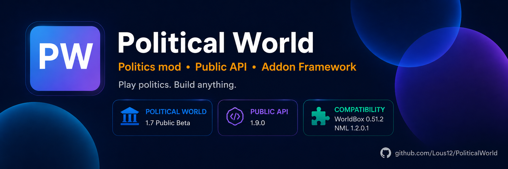

WorldBox politics mod • Public API • Open development
Political World 1.11
A politics mod for WorldBox with ideologies, parties, governments, crises, international blocs and a public API for addons.
Current status
Maintenance / open development
What the repository targets now
For players
Politics that lives with the world
Domestic politics
Ideologies, parties, governments, elections, stability, crises, coups and revolutions.
International politics
International blocs, vanilla alliance integration, summits, diplomacy and political consequences of war.
Political Map
Political map modes and dedicated kingdom/city Politics pages without turning the mod into a constant full-world scan.
For creators
Build on the public API, not private internals
Start an addon
Use the addon template and examples. Start with one visible feature and grow from there.
Getting Started →Use API 1.19
Events, addon data, world access, UI hooks, warfare helpers, content registration, diagnostics and more are exposed publicly.
API 1.19 →Using an AI coding assistant?
Give it AI_START_HERE.md and AGENTS.md first so it does not invent WorldBox APIs or bypass PoliticalWorldAPI with reflection.
AI_START_HERE →
Community development
Fork it, patch it, build on it
MIT
Political World is open for community work
Forks, focused pull requests, addon experiments, documentation fixes and AI-assisted contributions are welcome. Official releases still come from Lous12.
Community Addons
Independent addons can stay separate from core and use the same public API.
Issues
Good bug reports include versions, reproduction steps, Player.log and a save when it matters.
Discord
Talk about PW, addons, ideas, bugs and experiments with the community.
Development status
Active feature development is on a break
Political World is not being pushed through another giant feature cycle right now. The focus is maintenance, critical fixes, repository cleanup, documentation and making the project easier for other programmers and addon authors to understand.
Critical fixes
Repository cleanup
Public API 1.19
Community contributions
Support
Support Political World
DonationAlerts
The easiest regular way to support the project. Completely optional.
Open DonationAlertsUSDT · TRC20 / TRON
TAooa2bwstvhrSPnTaDZjBNGHZ1j5zDB4p
USDT · TON
UQCppGv_A8uf07Ws_zyPw_U7XRnhafM2TDd1ABR1DQrfGA73
Check the network before sending.
USDT on TRC20/TRON and USDT on TON use different networks. Send only through the network shown on the card.
Donations never unlock features and are never required to use Political World, the API, source code or documentation.
Directory